-
Android Eclair
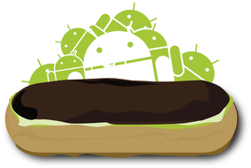
Android 2.0
Nivel de API 5Introdujo una pantalla de bloqueo, con panel rotatorio que emulaba el dial de los antiguos teléfonos analógicos. Tambien añadio la navegación GPS en Google Maps
-
Android Froyo
Android 2.2
Nivel de API 8Revolucionó el rendimiento con la introducción del compilador JIT, que multiplicó la velocidad de procesamiento, además de permitir por primera vez convertir el teléfono en un punto de acceso Wi-Fi portátil y dar soporte a Adobe Flash.
-
Android GingerBread
Android 2.3
Nivel de API 9Se enfocó en el gaming móvil al añadir soporte nativo para sensores como el giroscopio y el barómetro, además de ser el pionero en integrar la tecnología NFC para pagos móviles y el soporte oficial para cámaras frontales.
-
Honeycomb
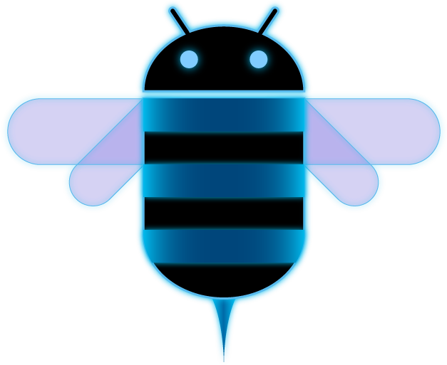
Android 3.0
Nivel de API 11Fue la versión rupturista diseñada exclusivamente para tablets, introduciendo la "Barra de Sistema" y los "Fragments" en la interfaz, elementos que permitieron aplicaciones con paneles múltiples mucho más productivos.
-
Ice Cream Sandwich
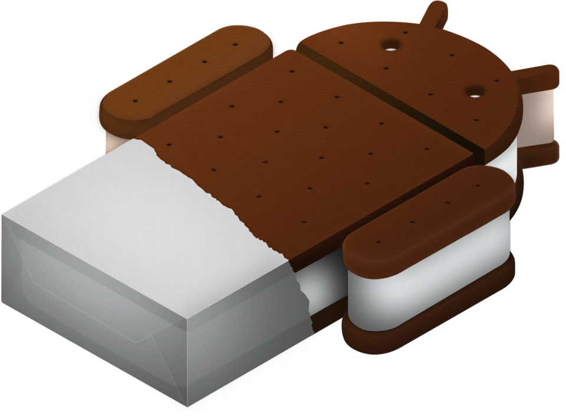
Android 4.0
Nivel de API 14Logró la unificación total entre tablets y móviles, introduciendo los botones virtuales en pantalla, el desbloqueo facial y la capacidad de cerrar aplicaciones deslizando el dedo, un gesto que hoy es estándar.
-
Jelly Bean
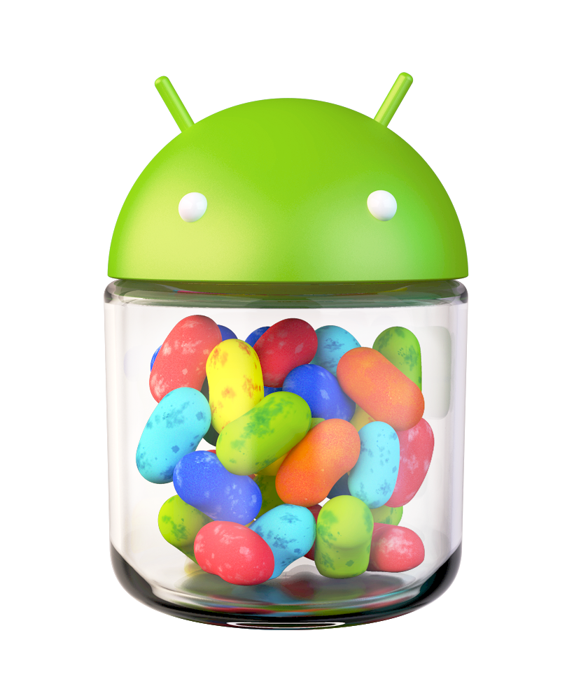
Android 4.1
Nivel de API 16Elevó la experiencia de usuario con "Project Butter", logrando una fluidez de 60 fps por primera vez, e introdujo Google Now, el primer asistente predictivo que mostraba información antes de que el usuario la buscara.
-
KitKat
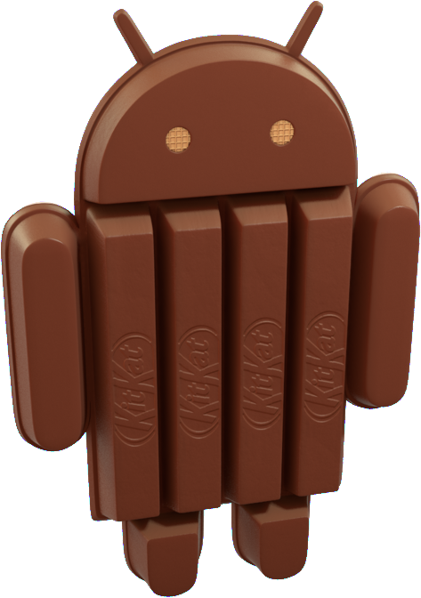
Android 4.4
Nivel de API 19Innovó con el "Project Svelte", permitiendo que el sistema funcionara en dispositivos de gama baja con apenas 512MB de RAM, e introdujo el modo inmersivo que ocultaba las barras de estado para un aprovechamiento total de la pantalla.
-
Lollipop
Android 5.0
Nivel de API 21Representó el cambio visual más grande con el nacimiento de Material Design, basado en capas de papel digital y sombras reales, además de introducir el tiempo de ejecución ART para una mayor eficiencia energética.
-
Marshmallow
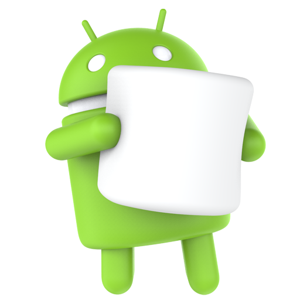
Android 6.0
Nivel de API 23Transformó la seguridad con el sistema de permisos en tiempo real e introdujo el modo "Doze", una gestión inteligente de batería que suspendía procesos al detectar que el teléfono no se movía.
-
Nougat
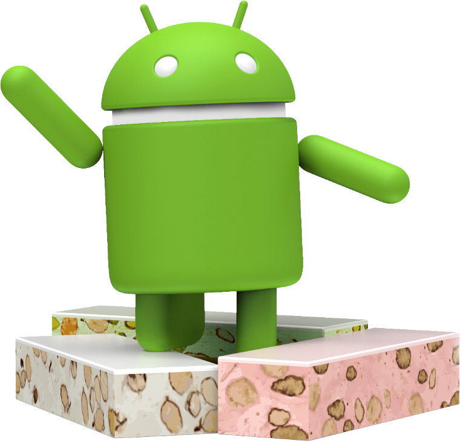
Android 7.0
Nivel de API 24Habilitó la multitarea real con el modo de pantalla dividida nativo y revolucionó las notificaciones permitiendo responder mensajes directamente desde la alerta sin necesidad de abrir la aplicación.
-
Oreo
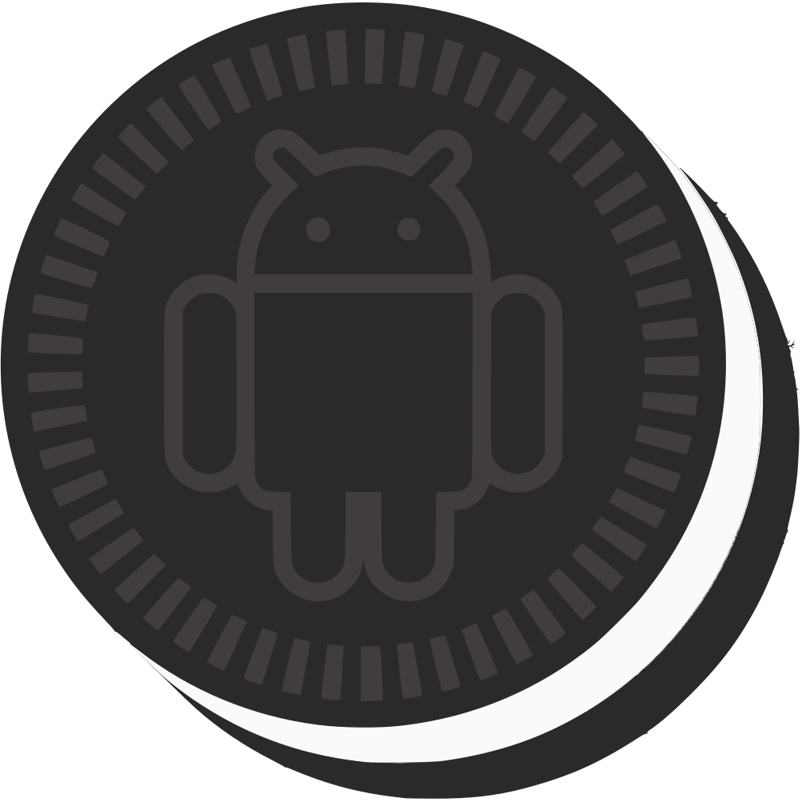
Android 8.0
Nivel de API 26Introdujo "Project Treble", la arquitectura que separó el sistema operativo del hardware para acelerar las actualizaciones, además de implementar el modo Picture-in-Picture (ventana flotante) para video y canales de notificación personalizados.
-
Pie
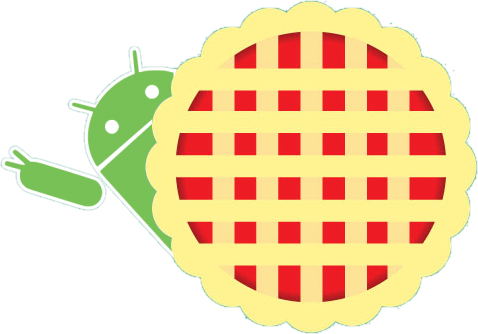
Android 9.0
Nivel de API 28Apostó por la Inteligencia Artificial con el Brillo y la Batería Adaptativa, que aprendían de los hábitos del usuario, y sustituyó la barra de navegación clásica por un sistema intuitivo de gestos.
-
Quince Tart
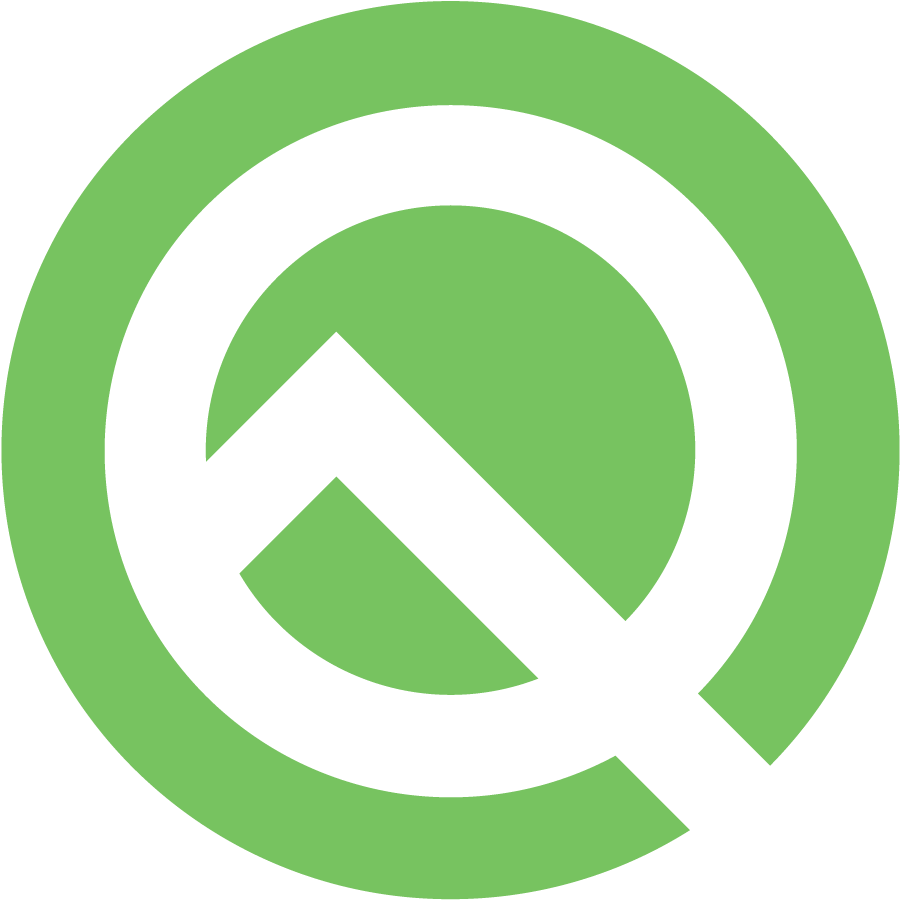
Android 10.0
Nivel de API 29Fue el salto a la madurez eliminando los nombres de postres comerciales; introdujo el modo oscuro global, el sistema de respuestas inteligentes en notificaciones y los "Live Captions" para subtitular cualquier audio en tiempo real.
-
Red Velvet Cake
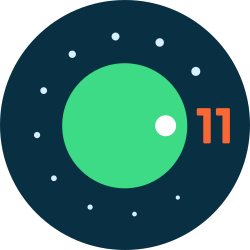
Android 11.0
Nivel de API 30Se centró en la comunicación con las burbujas de chat que flotan sobre otras apps y un control de dispositivos inteligentes integrado directamente en el menú de encendido, facilitando el manejo del hogar conectado.
-
iOS 15
iOS 15
iOS 15 SDKIntrodujo el modo Focus (Enfoque), que permite filtrar notificaciones según lo que estés haciendo, y revolucionó las videollamadas con SharePlay, permitiendo ver películas o escuchar música de forma sincronizada con otros a través de FaceTime.
-
Snow Cone
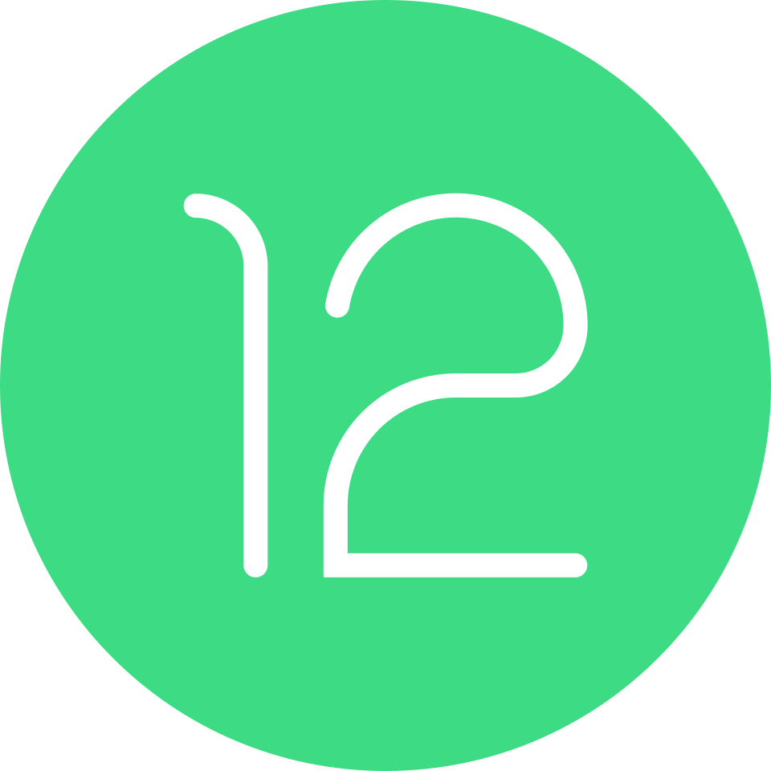
Android 12.0
Nivel de API 31Lanzó "Material You", un motor de temas dinámico que extrae los colores del fondo de pantalla para personalizar toda la UI, además de un panel de privacidad que indica exactamente cuándo se usa el micrófono o la cámara.
-
Android 13
Android 13.0
Nivel de API 33Refinó la seguridad permitiendo seleccionar solo fotos específicas para compartir en lugar de toda la galería, e introdujo la capacidad de configurar idiomas diferentes para cada aplicación de manera independiente.
-
iOS 16
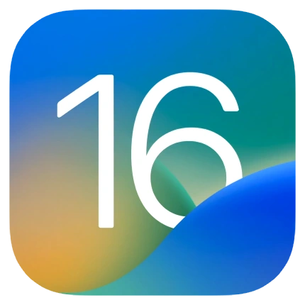
iOS 16
iOS 16 SDKPermitió la personalización de la pantalla de bloqueo con widgets y efectos de profundidad, además de introducir la Fototeca Compartida de iCloud, facilitando la gestión automática de recuerdos familiares en un álbum común.
-
iOS 17
iOS 17
iOS 17 SDKTransformó el iPhone en una pantalla inteligente con el modo StandBy (En Reposo) mientras carga, y lanzó los Contact Posters, permitiendo que cada usuario diseñe cómo aparece su imagen y nombre en el teléfono de los demás al llamar.
-
Upside Down Cake

Android 14.0
Nivel de API 34Mejoró la accesibilidad con fuentes escalables hasta el 200% sin romper el diseño de las apps e introdujo el soporte nativo para imágenes Ultra HDR, aprovechando al máximo los sensores de cámara modernos.
-
iOS 18
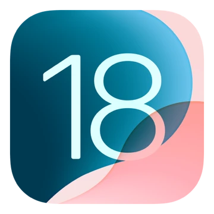
iOS 18
iOS 18 SDKMarcó un antes y un después con la integración de Apple Intelligence, una IA generativa que permite reescribir textos, crear imágenes y entender el contexto personal del usuario, además de ofrecer una personalización total del Home Screen.
-
Vanilla Ice Cream
Android 15.0
Nivel de API 35Innovó con el "Espacio Privado" para ocultar aplicaciones sensibles bajo una capa extra de biometría y la detección de robos mediante IA, que bloquea el teléfono automáticamente si detecta un tirón brusco.
-
Baklava
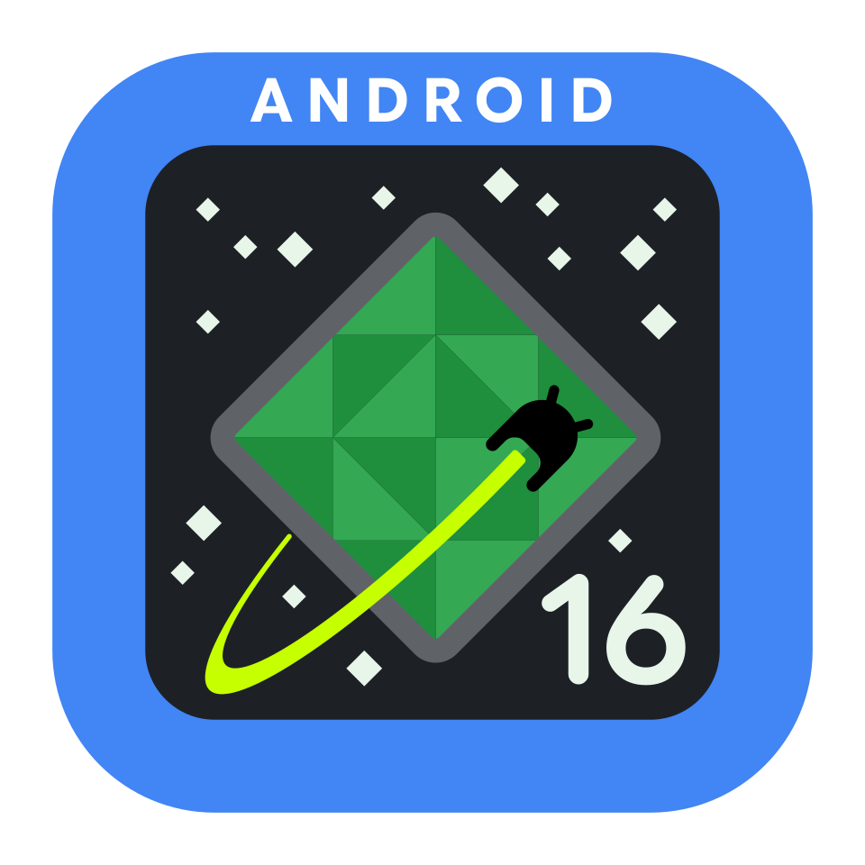
Android 16.0
Nivel de API 36Ha revolucionado la productividad con los "Bubble Stacks", permitiendo agrupar múltiples burbujas de aplicaciones, y un sistema de ventanas flotantes redimensionables que acerca la experiencia móvil a la de un escritorio de PC.
-
iOS 26
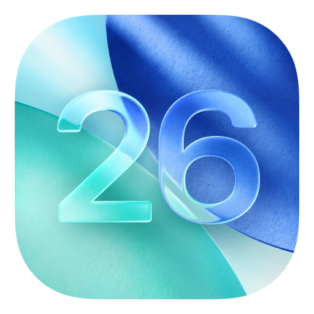
iOS 26
iOS 26 SDKIntrodujo la tecnología Liquid Glass, que permite que la interfaz del sistema se adapte físicamente a la superficie del dispositivo, creando texturas táctiles reales sobre el cristal.